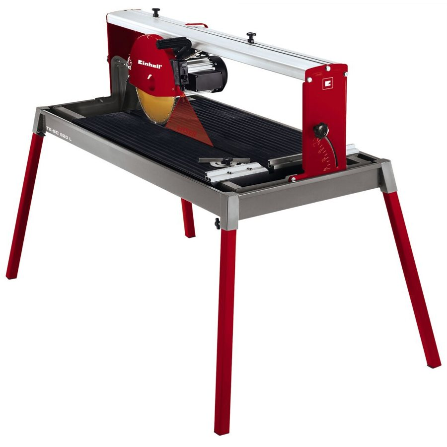
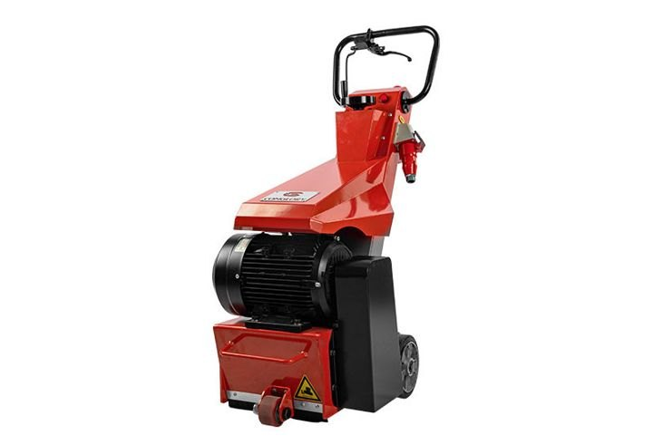
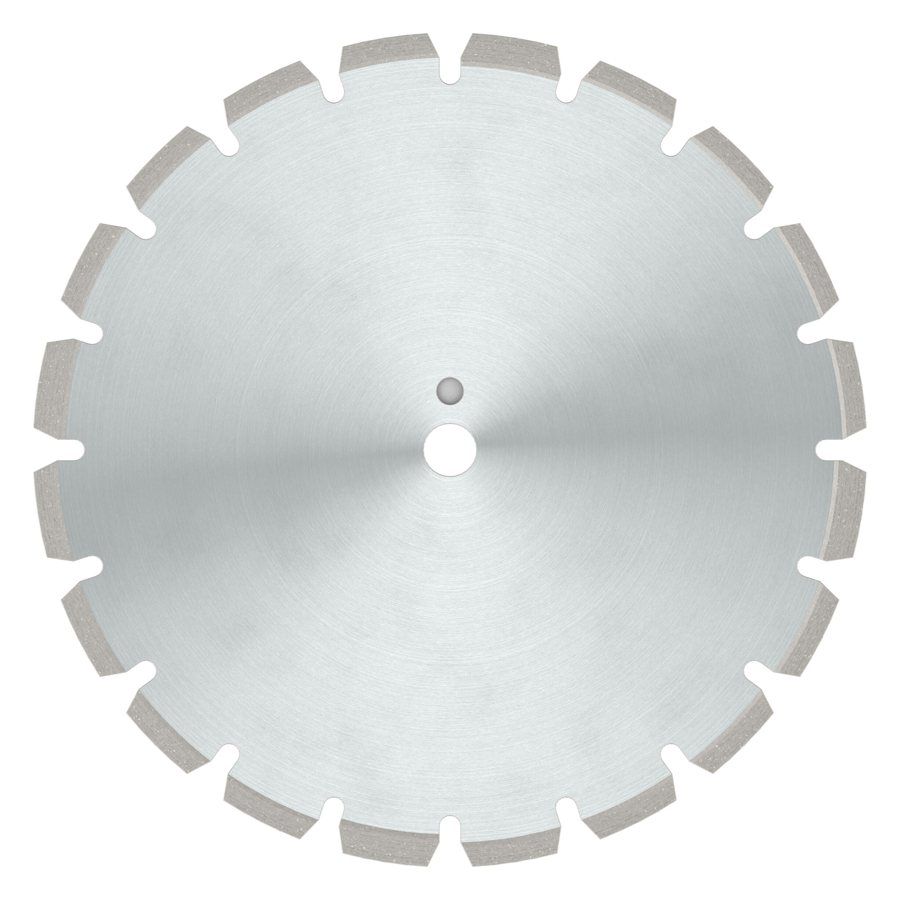
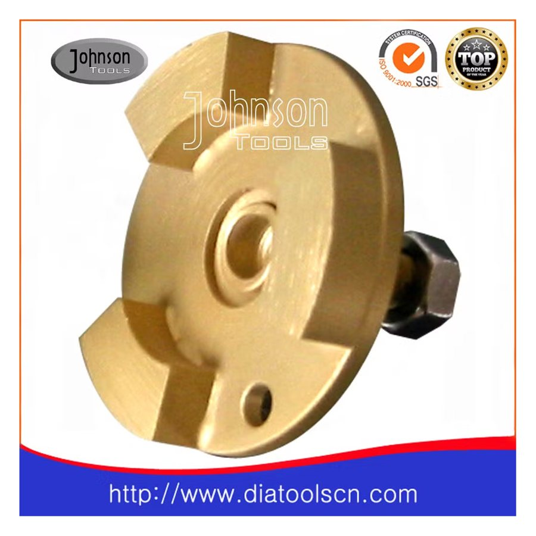
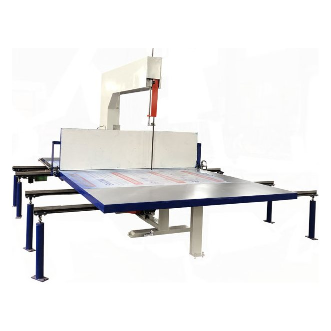

首页 / 切割、研磨与铣削设备 / 250毫米单盘地坪研磨机 （230伏）

图片仅供参考，展示产品类型。
切割、研磨与铣削设备
250毫米单盘地坪研磨机 （230伏）
紧凑型单相单盘研磨机，用于小房间、边缘区域和楼梯平台的找平层、混凝土和天然石材研磨。
单盘地坪研磨机是行星式研磨机的便捷补充，可在三头机器无法到达的小房间、边缘区域和楼梯平台上研磨找平层、混凝土和天然石材。250毫米研磨盘由可调速电机驱动，可装配用于混凝土、找平层和涂层的金刚石磨块。德国专业用户要求框架坚固、配有可连接M类或H类粉尘等级吸尘器的防尘罩、可调速以获得可控的研磨效果，并可使用工地230伏插座运行。须具备符合机械指令并满足EN ISO 12100和EN 60204-1的CE标志、德文说明书、电机、变频器和轮子的备件；
技术参数
| 工作宽度 / 研磨盘直径 | 250 mm |
|---|---|
| 电机功率 | 2.2 - 3.0 kW |
| 电源电压 | 220 V / 50 Hz 单相 |
| 转速 | 350 - 1,200 min⁻¹，无级调速 |
| 变频器 | 4 kW |
| 重量 | 约 60 - 70 kg |
| 海关编码（HS） | 84642080 |
欧盟标准与法规
2006/42/EG机械指令（自2027年1月20日起适用机械法规(EU) 2023/1230）EN ISO 12100EN 60204-1机械电气设备，通用要求2014/30/EU电磁兼容（EMC）指令2011/65/EURoHS指令（限制有害物质）及ElektroG/WEEE注册TRGS 559矿物粉尘（混凝土和找平层研磨时的降尘）TRGS 519石棉：拆除、翻新和维护作业（怀疑含石棉时）EN 60335-2-69工业吸尘器，附录AA：所连吸尘器的粉尘等级L、M和H
搭配产品

本类别其他产品

315毫米工地台式圆锯 （2000瓦, 230伏）配315毫米硬质合金锯片的便携式台式圆锯，用于在工地对方木、木板和板材进行纵切和斜切。

400毫米台式石材切割机 （2.2千瓦, 230伏）工地台式切割机，配400毫米金刚石锯片，可对砖石、铺路石、板材和混凝土进行精确湿切。

350毫米 （14英寸）汽油手持切割机，3.5千瓦不依赖电网的两冲程手持切割机，用于拆除工地切割混凝土、石材、沥青、管道和钢材。

汽油手推式混凝土路面切缝机，400毫米，7千瓦汽油发动机手推式切缝机，用于在混凝土、沥青和找平层上切割伸缩缝、洞口和分割缝。

550毫米三头行星式地坪研磨机 （400伏）三相行星式研磨机，用于基层处理，可快速清除涂层、胶粘剂和腻子残留以及找平层表皮。

250毫米电动地面铣刨机 （400伏）配铣刨滚筒的电动地面铣刨机，用于清除涂层、胶粘剂、沥青和松散找平层，并可对混凝土表面拉毛。

225毫米长杆式墙面与天花板打磨机 （长颈鹿打磨机）带225毫米打磨盘和吸尘功能的电动长杆打磨机，用于打磨墙面和天花板上的腻子、抹灰和石膏板。

金刚石切割片 Ø 350/400 mm，激光焊接，适用于混凝土和沥青，孔径 25.4 mm激光焊接金刚石切割片，适用于汽油切割机、路面切缝机和石材台锯，可切割沥青、混凝土和新浇筑混凝土。

墙面和天花打磨机用 Ø 225 mm 魔术贴网砂 （K80–K180 混合套装, 25 片）带魔术贴背基的开孔网状砂材，用于长杆墙面打磨机和石膏板打磨机：打磨腻子、抹灰和油漆不易堵塞，粉尘经打磨盘被吸走。

工地台锯用硬质合金圆锯片 Ø 315 × 30 mm，48 齿适用于工地台锯和台式圆锯的硬质合金圆锯片，用于建筑木材、实木和板材的纵切和横切。

Ø125×1.0×22.23 mm 钢/不锈钢超薄切割片适用于角磨机的超薄切割片。

Ø115 mm 刚玉纤维砂磨片,粒度36–120用于角磨机金属加工的树脂纤维砂磨片。

Ø125 mm 除锈除漆无纺布磨盘用于除漆、除锈和表面处理的无纺布磨盘。

Ø125 mm 单排金刚石碗形磨轮,混凝土/石材适用于角磨机的单排金刚石碗形磨轮。

1200 W 电动木工修边机,6/8 mm 夹头适用于木材和塑料的入门级修边机。

500 W 电动金属板开孔剪 (蚕食剪)用于金属板曲线和直线切割的电动蚕食剪。

磁座钻用 HSS 空心钻 (环形铣刀)套装,Weldon 柄用于钢材快速干净钻孔的环形铣刀套装。

带切割台的热线泡沫切割机用于切割聚苯乙烯和海绵的台式设备。